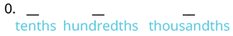
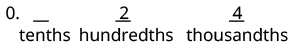

দশমিক সংখ্যা লেখা
উৎস-অনুগত উপবিভাগ · m81293-fs-id1301760। সম্পূর্ণ বইয়ের অনুবাদ এখনও চলছে। গাণিতিক চিহ্ন, সংখ্যা ও মূল কাঠামো অক্ষুণ্ণ; প্রযোজ্য ক্ষেত্রে সূত্রের শব্দলেবেল বাংলায় অনূদিত। মূল ছবির ভিতরের ইংরেজি লেবেলের অর্থ বাংলা বিবরণে আছে। স্বাধীন শিক্ষক ও ভাষা-পর্যালোচনা বাকি। অন্য উপবিভাগের উৎস-লিঙ্কে ইন্টারনেট প্রয়োজন।
দশমিক সংখ্যা লেখা
এবার কথায় দেওয়া দশমিক সংখ্যাকে অঙ্কে লিখব। আগের পদ্ধতির সাহায্যে এবার উল্টো কাজটি করব। এখানে মূল বইয়ের স্থানীয় মান ধরে বলা নামগুলি ব্যবহার করা হচ্ছে—যেমন পূর্ণসংখ্যা অংশের পরে ‘ও’, তারপর ভগ্নাংশের স্থানীয় মান। সাধারণ বাংলা পাঠে ‘দশমিক’ শব্দের পরে প্রতিটি অঙ্ক আলাদা করে বলা হয়; নীচের ‘ও’ খোঁজার নিয়মটি সেই সাধারণ পাঠের নিয়ম নয়।
প্রথমে ‘ছয় ও সতেরো শতাংশ’ সংখ্যাটিকে দশমিক রূপে লিখি। এখানে শতাংশ বলতে একশো সমান ভাগের এক ভাগ বোঝায়:
| ছয় ও সতেরো শতাংশ | |
| স্থানীয় মানের এই নামে ও শব্দটি দশমিক বিন্দু বসানোর জায়গা জানায়। | ___.___ |
| ও-এর আগে থাকা নামটি পূর্ণসংখ্যা অংশের; সেটিকে অঙ্কে দশমিক বিন্দুর বাঁ দিকে লেখো। | 6._____ |
| ভগ্নাংশ অংশ হল সতেরো শতাংশ। শতাংশের জন্য দশমিক বিন্দুর ডান দিকে দুটি ঘর রাখো। |
6._ _ |
| সতেরো সংখ্যাটির অঙ্ক দুটি রাখা ঘরগুলিতে লেখো। | 6.17 |
অনুশীলন · এই প্রশ্নের লিঙ্ক
চোদ্দ ও সাঁইত্রিশ শতাংশকে দশমিক রূপে লেখো।
সমাধান
| চোদ্দ ও সাঁইত্রিশ শতাংশ | |
| স্থানীয় মানের নামে ‘ও’ শব্দের নীচে দশমিক বিন্দু বসাও। | ______. _________ |
| ‘ও’-এর আগে থাকা পূর্ণসংখ্যা অংশকে অঙ্কে দশমিক বিন্দুর বাঁ দিকে লেখো। | 14. _________ |
| শতাংশের জন্য দশমিক বিন্দুর ডান দিকে দুটি ঘর রাখো। | 14.__ __ |
| ‘ও’-এর পরে বলা সংখ্যাটিকে অঙ্কে দশমিক বিন্দুর ডান দিকের ঘরে লেখো। | 14.37 |
| চোদ্দ ও সাঁইত্রিশ শতাংশকে লিখি 14.37। সাধারণ বাংলা পাঠ: চোদ্দ দশমিক তিন সাত। |
দ্বিতীয় ধাপের ভিতরের দ্বিতীয় নির্দেশটি ‘নয় সহস্রাংশ’-এর মতো সংখ্যার জন্য, যেখানে পূর্ণসংখ্যা অংশের মান 0। ‘দশাংশ’, ‘শতাংশ’, ‘সহস্রাংশ’ ইত্যাদি শব্দ থেকে ভগ্নাংশ অংশের স্থানীয় মান চেনা যায়। স্থানীয় মানের এই সংক্ষিপ্ত নামে পূর্ণসংখ্যা অংশ ও ‘ও’ বলা হয়নি। তাই দশমিক বিন্দুর বাঁ দিকে 0 লিখি, তারপর আগের মতো ডান দিকের ঘরগুলি পূরণ করি। সাধারণ বাংলা পাঠে কিন্তু বলব ‘শূন্য দশমিক শূন্য শূন্য নয়’—কোনও শূন্য বাদ দেব না।
অনুশীলন · এই প্রশ্নের লিঙ্ক
চব্বিশ সহস্রাংশকে দশমিক রূপে লেখো।
সমাধান
| চব্বিশ সহস্রাংশ | |
| স্থানীয় মানের নামে ‘ও’ শব্দটি আছে কি না দেখো। | ‘ও’ নেই, তাই 0 দিয়ে শুরু করো। 0. |
| সহস্রাংশের জন্য দশমিক বিন্দুর ডান দিকে তিনটি ঘর রাখো। |  0-এর পরে দশমিক বিন্দু এবং তার ডান দিকে তিনটি ফাঁকা ঘর আছে। নীচে বাঁ থেকে ডানে ঘরগুলির নাম দশাংশ, শতাংশ ও সহস্রাংশ। এগুলির এক-একটি এককের মান যথাক্রমে লব 1 ও হর 10, 100 এবং 1000-এর ভগ্নাংশ। |
| 24 লেখো, যাতে 4 অঙ্কটি সহস্রাংশের ঘরে থাকে। |  0-এর পরে দশমিক বিন্দু। ডান দিকের তিনটি ঘরের মধ্যে দশাংশের ঘর এখনও ফাঁকা, শতাংশের ঘরে 2 এবং সহস্রাংশের ঘরে 4 আছে। প্রতিটি ঘরের নীচে তার স্থানীয় মানের নাম লেখা। ছবিতে ফাঁকা দশাংশের ঘরে এখনও শূন্য বসানো হয়নি। |
| বাকি ফাঁকা দশমিক ঘরে স্থানীয় মান বজায় রাখতে শূন্য বসাও। | 0.024 |
| তাই চব্বিশ সহস্রাংশকে লিখি 0.024। পড়ি শূন্য দশমিক শূন্য দুই চার। |
পরের বিষয়টিতে যাওয়ার আগে আবার টাকা-পয়সার কথা ভাবো। আমরা জানি ও একই মূল্য বোঝায়। প্রসঙ্গ অনুযায়ী আমরা লিখি। তেমনই পূর্ণসংখ্যাকে দশমিক রূপে লিখলে দশমিক বিন্দুর ডান দিকে যতগুলি প্রয়োজন শূন্য বসানো যায়; এতে সংখ্যার মান বদলায় না।